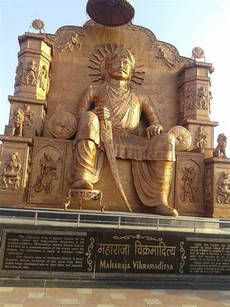

|
 |
" આ શબ્દો સાથે તેણે તેમાંથી એક ગોળ મીઠાઈ લીધી અને તેને એક કૂતરાને ફેંકી દીધી. કૂતરાએ ખાધું કે તરત જ તે આંચકીને મરી ગયો. મામલો આ વળાંક જોઈને રાજકુમાર ગુસ્સે થઈ ગયો અને કહેવા લાગ્યો, 'તે અયોગ્ય છે. આટલી જૂઠી સ્ત્રી સાથે સંબંધ બાંધવો; આ ઘડી સુધી તેના પ્રેમને કિરણ હૃદયમાં સ્થાન મળ્યું છે; જો કે, હવે બધું સમાપ્ત થઈ ગયું છે.' ' આ સાંભળીને મંત્રીના પુત્રે કહ્યું, 'મહારાજ! જે બન્યું છે, તે થઈ ગયું છે (એટલે કે, વીતી જવા દો) તમારે હવે એવી રીતે વર્તવું જોઈએ કે તમે તેને તમારી પાસે લઈ જઈ શકો. ઘર.' રાજકુમારે કહ્યું, 'ભાઈ! આ પણ તમે એકલા જ કરી શકો.' મંત્રીના પુત્રે કહ્યું, 'આજે એક કામ કર, પદ્માવતી પાસે ફરી જા, અને હું તને જે કહું તે પ્રમાણે જ કર, - પહેલા જઈને તેના પ્રત્યે ખૂબ આદર અને સ્નેહ દર્શાવો; (અને) જ્યારે તે ઊંઘી જાય, ત્યારે ઊતર. તેના ઝવેરાત, અને આ ત્રિશૂળ વડે તેની ડાબી જાંઘ પર પ્રહાર કરો અને તરત જ ત્યાંથી દૂર આવો.' " આ સૂચનાઓ મળતાં, રાજકુમાર રાત્રે પદ્માવતી પાસે ગયો, અને ખૂબ જ પ્રેમભર્યા વાર્તાલાપ પછી, તેઓ બંને સાથે સૂવા માટે સૂઈ ગયા; પરંતુ તે ગુપ્ત રીતે તેની તક જોઈ રહ્યો હતો. ટૂંકમાં, જ્યારે રાજકુમારી સૂઈ ગઈ, ત્યારે તેણે બધું જ ઉપાડ્યું. તેણીના ઘરેણાં, ત્રિશૂળ વડે તેણીની ડાબી જાંઘ પર પ્રહાર કરી, અને તેના પોતાના ઘરે આવ્યો. તેણે મંત્રીના પુત્રને બધી ઘટનાઓ સંભળાવી, અને ઝવેરાત તેની સમક્ષ મૂક્યા. પછી તેણે ઝવેરાત ઉપાડ્યા, રાજકુમારને તેની સાથે લઈ ગયા, અને, એક ભક્તનો વેશ ધારણ કરીને, ગયો અને શરીરને સળગાવવાની જગ્યાએ બેઠો. તેણે પોતે એક આધ્યાત્મિક ગુરુનો ભાગ લીધો, અને તેને (રાજકુમારને) પોતાનો શિષ્ય બનાવીને કહ્યું, 'તમે બજારમાં જાઓ અને આ ઝવેરાત વેચો; જો કોઈ તમને આ કરતી વખતે પકડે છે, તો તેને મારી પાસે લાવો.' " "તેની સૂચનાઓ પ્રાપ્ત કરીને, રાજકુમાર ઝવેરાત પોતાની સાથે શહેરમાં લઈ ગયો, અને રાજાના મહેલના દરવાજાની નજીક આવેલા એક સુવર્ણકારને બતાવ્યો; તેણે તેમને જોયા કે તરત જ તેણે તેમને ઓળખી લીધા, અને કહ્યું, 'આ રાજકુમારીના છે. ઝવેરાત ; મને સાચું કહો, તે તમને ક્યાંથી મળ્યા?' તે તેને આ વાત કહેતો હતો જ્યારે તેની આસપાસ દસ કે વીસ વધુ માણસો ભેગા થયા હતા. ટૂંકમાં, કોતવાલે સમાચાર સાંભળીને માણસો મોકલીને રાજકુમારને, ઝવેરાત અને સુવર્ણ સાથે પકડીને તેની સમક્ષ લાવ્યા અને તપાસ કરી. ઝવેરાત, તેને ખરેખર જણાવવા કહ્યું કે તેને તે ક્યાં મળ્યા છે. જ્યારે તેણે કહ્યું, 'મારા આધ્યાત્મિક ઉપદેશકે તે મને વેચવા માટે આપ્યા છે, પરંતુ મને ખબર નથી કે તેણે તે ક્યાંથી મેળવ્યા છે,' - ત્યારે કોટવાલે ઉપદેશકને પણ પકડી લીધો અને લાવ્યો. તેની સમક્ષ, અને તે બંનેને, ઝવેરાત સાથે, રાજાની હાજરીમાં લઈ જઈને, તમામ સંજોગો જણાવ્યા." " કથા સાંભળીને રાજાએ ભક્તને સંબોધીને કહ્યું, 'ગુરુજી! તમે આ ઝવેરાત ક્યાંથી મેળવ્યા?' ભક્તે કહ્યું, 'મહારાજ! અંધારી ચંદ્ર પખવાડિયાની ચૌદમી રાત્રે મેં એક સળગતી જમીનની મુલાકાત લીધી હતી. ચુડેલ માટે મંત્રો: જ્યારે ચૂડેલ આવી, ત્યારે મેં તેના ઝવેરાત અને વસ્ત્રો ઉતારી દીધા અને તેની ડાબી જાંઘ પર ત્રિશૂળની છાપ કરી; આ રીતે આ ઘરેણાં મારા કબજામાં આવ્યા.' ભક્તનું આ કથન સાંભળીને રાજા પોતાના ખાનગી મકાનમાં ગયો અને ભક્ત પોતાના આસન પર ગયા. અથવા નહીં, અને (જો એમ હોય તો) કેવા પ્રકારનું ચિહ્ન છે.' રાણીએ જઈને જોયું તો તેને ત્રિશૂળનું નિશાન મળ્યું. તેણીએ પાછા ફરીને રાજાને કહ્યું, 'મહારાજ! ત્યાં ત્રણ સમાંતર નિશાન છે; ખરેખર, એવું લાગે છે કે જાણે કોઈએ તેના પર ત્રિશૂળથી પ્રહાર કર્યો હોય.' " " આ વાત સાંભળીને રાજા બહાર આવ્યો અને કોતવાલને બોલાવ્યો, અને તેને કહ્યું કે જાઓ અને ભક્તને લઈ આવો. આદેશ મળતાં જ કોટવાલ ભક્તને લાવવા માટે નીકળ્યો; અને રાજાએ આ રીતે વિચારવાનું શરૂ કર્યું, -'કોઈના ઘરની બાબતો, અને કોઈના હૃદયના ઇરાદા, અને કોઈને જે નુકસાન થયું હોય તે - આ કોઈને જાહેર કરવું યોગ્ય નથી;' જ્યારે અંતરાલમાં કોટવાલ ભક્તને હાજરીમાં લાવ્યો.ત્યારે રાજાએ ભક્તને એક બાજુએ લઈ જઈને પ્રશ્ન કર્યો, 'આધ્યાત્મિક માર્ગદર્શક! સ્ત્રી માટે શાસ્ત્રોમાં શું સજા લખવામાં આવી છે?' આના પર ભક્તે કહ્યું. , ' મહારાજ ! જો કોઈ બ્રાહ્મણ , ગાય , પત્ની , બાળક કે આપણા પર આશ્રિત કોઈપણ કલંકિત કૃત્યમાં દોષિત હોય તો એવાને દેશમાંથી હાંકી કાઢવાની વિધાન છે.' " |
|
" આ સાંભળીને રાજાએ પદ્માવતીને એક વાસણમાં મૂકીને એક જંગલમાં છોડી દીધી હતી. ત્યારબાદ રાજકુમાર અને મંત્રીનો પુત્ર બંને ઘોડા પર બેસીને તેમના નિવાસસ્થાનમાંથી નીકળીને તે જંગલમાં ગયા, રાજકુમારી પદ્માવતીને પોતાની સાથે લઈ ગયા અને ચાલ્યા ગયા. પોતપોતાના દેશ માટે બહાર નીકળી ગયા. થોડા દિવસો પછી દરેક તેના પિતાના ઘરે પહોંચ્યા. સૌથી વધુ આનંદ, ઉચ્ચ અને નીચ બધાનો કબજો મેળવ્યો; અને આ (એટલે કે, રાજકુમાર અને રાજકુમારી,) પરસ્પર સુખના જીવનમાં પ્રવેશ્યા." આટલી બધી વાર્તાઓ સંભળાવ્યા પછી સ્પ્રાઈટે રાજા વિક્ફામાજીતને પૂછ્યું, "આ ચારમાંથી કોને દોષ લાગે છે? જો તમે આ મુદ્દો નક્કી નહીં કરો, તો તમને નરકમાં નાખવામાં આવશે." રાજા વિક્રમે કહ્યું, "અપરાધ રાજાને લાગે છે." સ્પ્રાઉટે જવાબ આપ્યો, "રાજા પર પાપ કેવી રીતે પડે છે?" વિક્રમે તેને આ રીતે જવાબ આપ્યો, "મંત્રીના પુત્રએ ફક્ત તેના માલિક પ્રત્યેનું પોતાનું કર્તવ્ય કર્યું; અને કોટવાલે રાજાની આજ્ઞાનું પાલન કર્યું; અને રાજકુમારીએ તેનો હેતુ પ્રાપ્ત કર્યો; તેથી, તેને અવિચારી રીતે દેશમાંથી હાંકી કાઢવા બદલ દોષ રાજા પર પડે છે." રાજાના મુખમાંથી આ શબ્દો સાંભળીને, સ્પ્રાઉટ ગયો અને તે જ ઝાડ પર પોતાને લટકાવી દીધો. |
|
| પેજ નંબર ૯ | ||